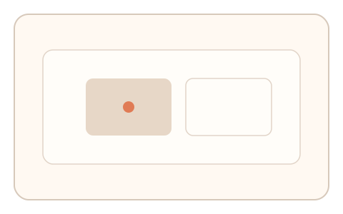
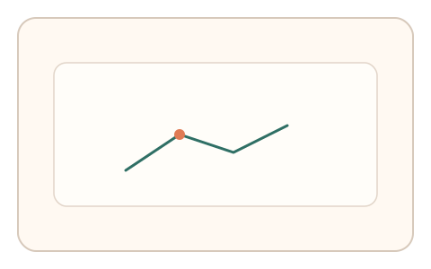
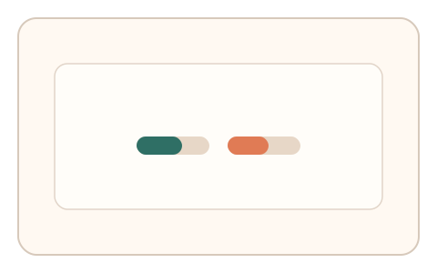

#166
Reverse Brainstorming - Round 3
已扩展
意图‑上下文绑定
将验证任务绑定当前操作上下文，比较注意力路径与任务一致性。
概念原文
将验证任务与当前操作意图绑定（与正在执行的动作、焦点区域相关），并比较注意力路径与任务内一致性。
采样得到的“通用人类分布”无法适配具体上下文。
研究背景
上下文绑定可避免通用分布攻击。真实用户的注意力路径与当前意图高度相关，脚本难以在具体上下文中保持一致。
核心机制
- 从当前操作上下文生成任务。
- 记录注意力路径与停顿。
- 比较路径与上下文一致性。
- 结合反应时输出判定。
用户流程
- 步骤 1：系统基于当前上下文生成任务。
- 步骤 2：用户完成任务并产生路径。
- 步骤 3：系统评估上下文一致性。
判定信号
注意力路径‑上下文匹配
真实用户路径与目标区域关联度高。
上下文切换反应时
意图绑定会体现自然反应时分布。
判定逻辑
路径一致性与反应时需在基线范围；脱离上下文或异常快判异常。
对抗面
- 脚本忽略上下文并固定路径
- 利用通用模型模拟注意力
防御与缓解
- 动态生成上下文相关任务
- 隐藏关键线索并随机化提示
- 结合历史上下文链验证
可达性与风险
提供简化上下文提示与键盘替代。
- 上下文变化过快导致困惑
- 复杂界面影响路径判断
可视化状态

状态 1：上下文锚点
任务与当前区域绑定。

状态 2：路径一致性
记录注意力路径与停顿。

状态 3：绑定判定
比较路径与上下文一致性。
参考资料
Context-aware computing
说明上下文绑定与任务生成。
Visual attention
说明注意力路径与目标一致性。